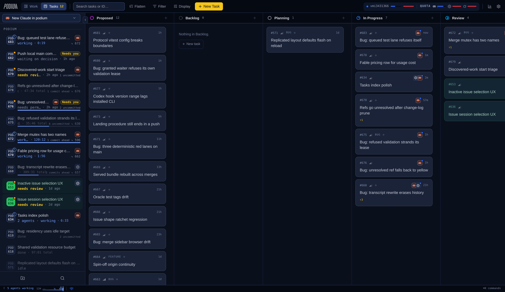
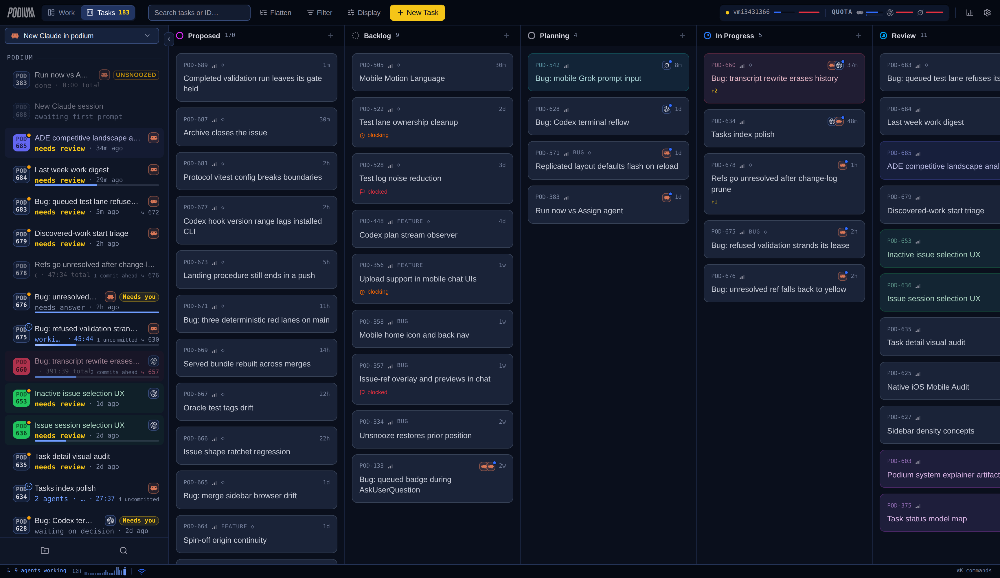
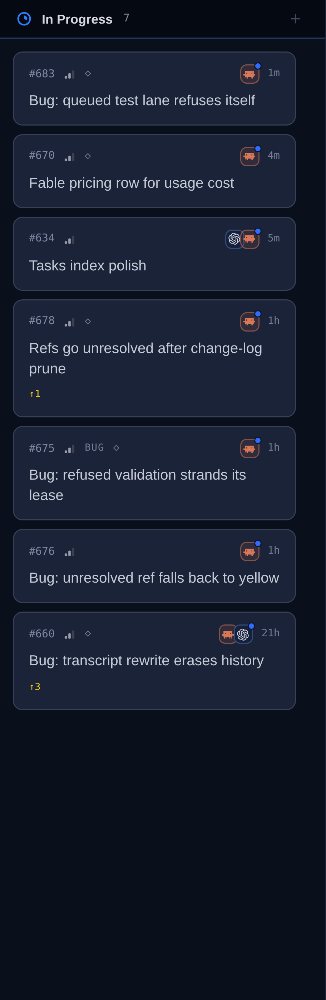
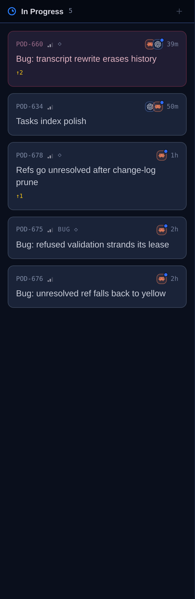
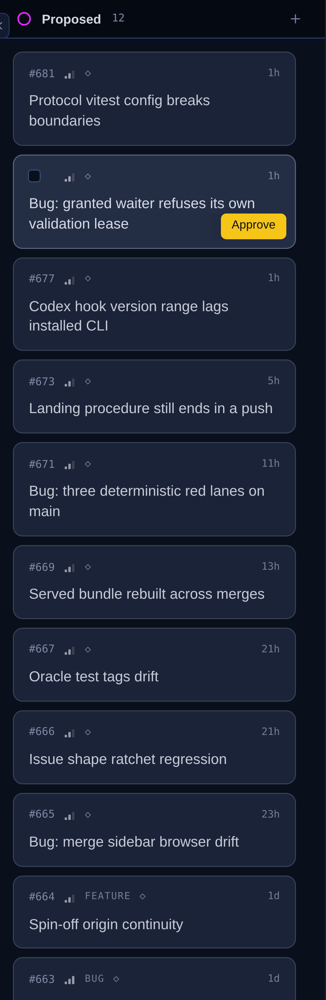
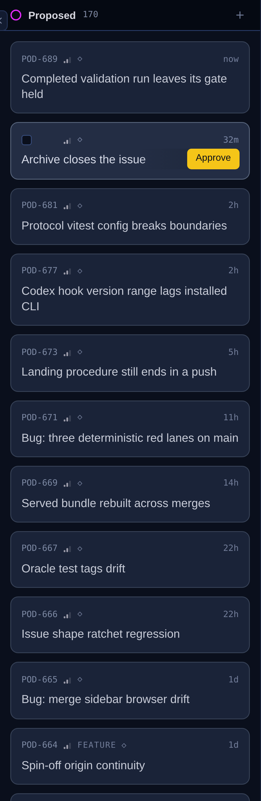
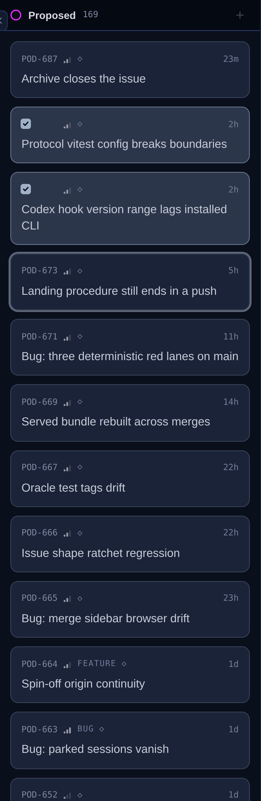
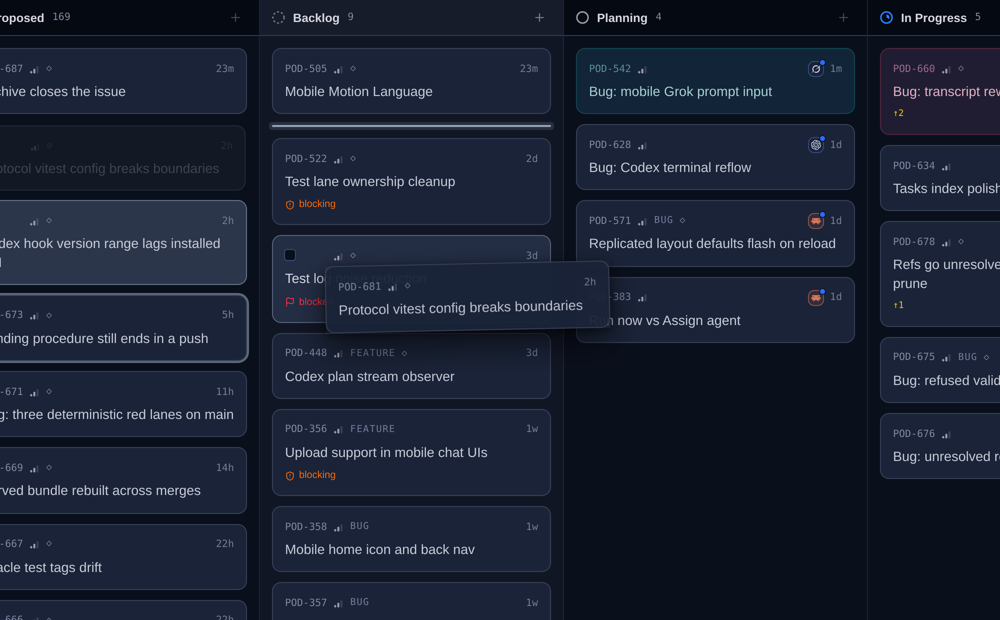
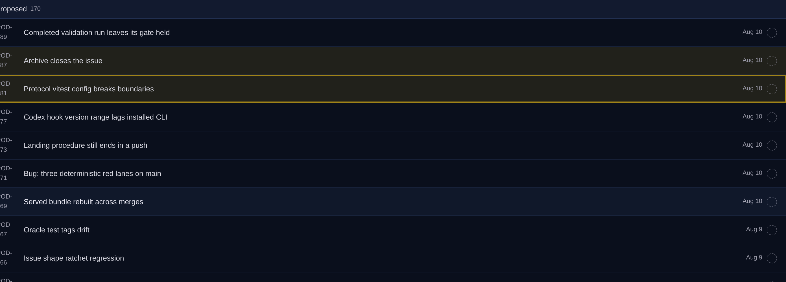
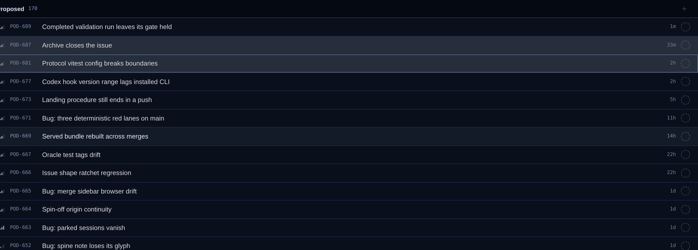

Shot against the live board with its real 180-task backlog. The first pass on this issue scaled the card up about a pixel everywhere; this one goes after the things that were making it read as assembled rather than composed — one left edge per column, separation that distinguishes a card from its neighbours, and the list layout brought onto the board's vocabulary.
Every card now sits the same distance from both edges of its column, and more titles fit on one line, so a column scans as a stack rather than a wall.


The card was leaning right: scrollbar-gutter: stable reserves its
15px inside the padding box, so every card sat 12px from the left of its
column and 28px from the right. The column now scrolls the way the sidebar's work
list does, and the gutter it gives back goes to the cards.


| What | Was | Now | Why |
|---|---|---|---|
| Card inset, left / right | 12 / 28 | 12 / 12 | The single visible tell that nothing on the board was measured. |
| Left edges per column | 4 | 1 | Stage glyph, card edge and the + now share one line. |
| Gap between cards | 8 | 10 | They were equal, so the three parts of a card stood as far apart as two cards did and the column read as loose lines. |
| Gap inside a card | 8 | 6 | |
| Fleet tile | 18 | 16 | A saturated terracotta square was out-shouting the title. |
| Sizes in the meta row | 4 | 2 | 10px for what is read, 9.5px for the uppercase tokens. |
Approve is inset to the card's own padding now, and the fade that clears a wrapped title runs 56px instead of 24 — the text recedes under the button rather than stopping dead beside it.


A selected card used to get darker under the cursor — hover and selection each wrote one background class, and the variant won on source order, so the card visibly deselected itself. Hover is conditioned on the selection now and steps up from it. Drag is unchanged and still lands where the line says.


The board was rebuilt at POD-591 and the list was left on the older vocabulary:
a translucent blurred group bar, a US month/day date next to the board's
1d, an ID set in sans, a violet Epic pill from outside the palette,
and yellow for both hover-selection and the focus ring — two spends of the one
voice the design reserves for "this needs you".


+.epic and deleted are the board's tokens rather than pills.Aug 10 became 33m — the board's words for the same fact.Stage glyph colours. Proposed is fuchsia and Done is green, neither of which is in the Superade palette. They are shared by the board, the list, the sidebar and the task page, so re-hueing them is its own change with its own before/after — filed rather than smuggled into a spacing pass.
Card radius and title ink. 9px and --issue-bright are the
system's own derivations, not drift; nothing about them was reading as a defect.